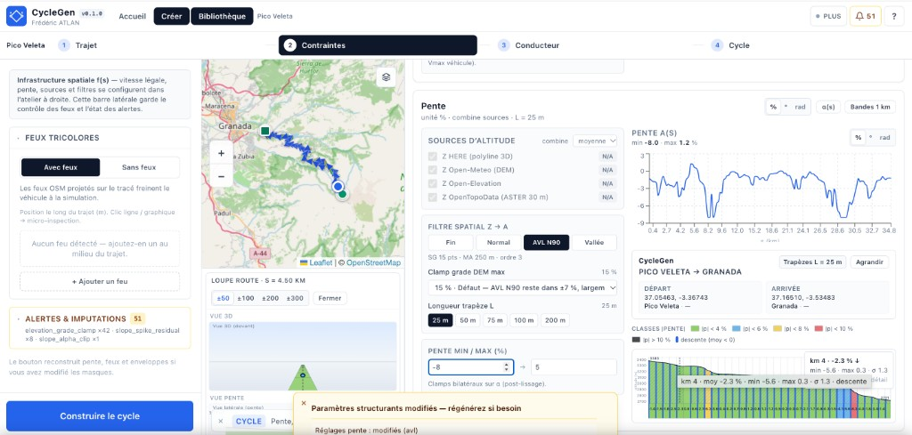
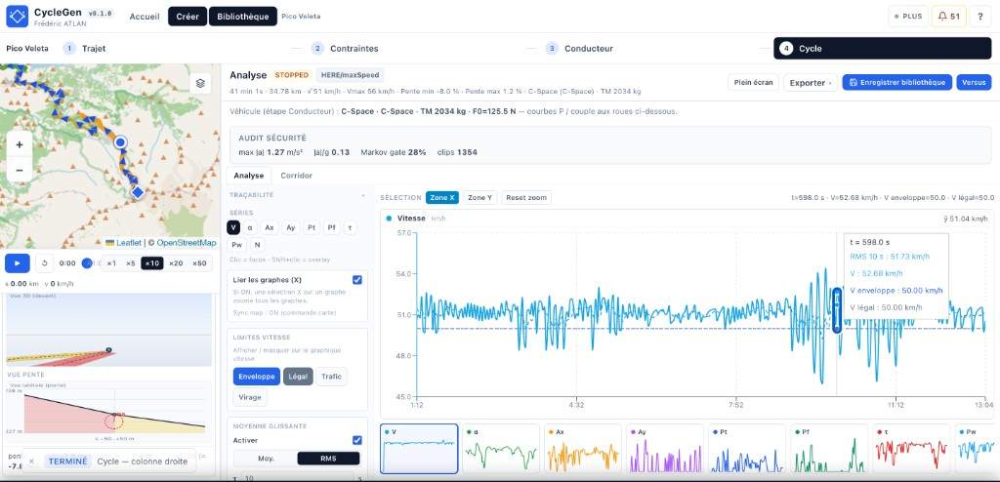

Pourquoi j’avais besoin de cycles sur mesure
Le besoin vient de mon métier. Un simulateur véhicule se nourrit de profils vitesse, temps et pente. Avec un cycle réglementaire plat, on ne voit jamais une descente de col, comme celle du Pico Veleta vers Grenade, alors que c’est là que le frein chauffe et que la régénération d’un véhicule électrique sature. Pour dimensionner ces systèmes, il faut des cycles qui ressemblent à l’usage réel, et savoir quels points de fonctionnement reviennent souvent. Les outils qui les produisent ne montrent pas leurs hypothèses. J’ai donc écrit CycleGen.
L’outil embarque aussi les cycles de référence (WLTC, NEDC, FTP-75, US06…) pour comparer un cycle généré à ce qu’on utilise d’habitude. J’ai comparé des cycles générés à des roulages mesurés, mais je ne peux pas publier ces résultats.
Entrée
un trajet sur la carte
départ, arrivée, heure de départ
Serveur
route préparée, puis conducteur simulé
cycle t, v, s, a, pente, pas d’une seconde
Atelier
forces, couple et puissance aux roues
export CSV, XML ou Excel
De la carte au cycle : ce qui est lent, ce qui est rapide
L’écran web est un atelier. La simulation du conducteur tourne sur un serveur Python, qu’un script peut donc appeler directement. Reconstruire la route prend du temps, parce qu’il faut interroger plusieurs services et des modèles de terrain. Une fois cette route préparée et gardée en mémoire, changer de conducteur ou de véhicule ne demande que quelques dizaines de millisecondes : retoucher un réglage relance la simulation sans remettre la carte à zéro.
Une fois par trajetappels aux services cartographiques
- 1TrajetAdresses → points GPS (Photon)serveur
- 2ItinéraireTracé routier (OSRM)serveur
- 3AltitudeProfil du terrain (Open-Meteo, OpenTopoData)serveur
- 4Feux et limitationsLus dans OpenStreetMap (Overpass)serveur
- 5CorridorPente lissée, courbure, enveloppe de vitesseserveur
Corridor gardé en mémoire une heure
À chaque réglagequelques dizaines de millisecondes
- 6ConducteurIDM, profil Eco, Normal ou Sportifserveur
- 7Cyclet, v, s, a et pente, pas d’une secondeserveur
- 8Forces aux rouesLoi de route F0, F1, F2, masse, rayon : force, couple, puissanceatelier
- 9ExportCSV, XML ou classeur Excelatelier
- 9 étapes de calcul
- 3 profils de conducteur
- 1 s pas de temps
- 1 h route gardée en mémoire
- 3 formats d’export
Préparer la route : pente, virages, vitesse maximale
Avant de conduire, le serveur prépare ce que j’appelle le corridor : la route découpée le long de la distance, avec sa pente, ses limitations, la vitesse de confort dans chaque virage et, en option avec une clé Mapbox, une estimation du trafic selon l’heure de départ. Pour les feux, les grands axes ont une onde verte ; ailleurs, l’état rouge ou vert est tiré avec une graine fixe, si bien que le même trajet donne toujours le même cycle.
L’altitude brute plonge parfois sous un pont : on corrige d’abord les ponts et les tunnels, on lisse, puis on calcule la pente sur des paliers de longueur fixe. La vitesse maximale retenue, l’enveloppe, est le minimum de toutes ces limites, rendu freinable puis lissé.
Équations du corridor et de l’enveloppe
Pente sur des paliers de longueur \(L\), après moyenne glissante et léger lissage de Savitzky–Golay de l’altitude \(z\) :
\[ \alpha_k=\operatorname{atan}\!\left(\frac{\Delta z_k}{L}\right) \]Virage (\(a_y\) confort latéral, \(R\) rayon) et enveloppe :
\[ V_{\mathrm{curve}}(s)=\sqrt{a_y\,R(s)} \] \[ V_{\mathrm{envelope}}(s)=\min\bigl(V_{\mathrm{curve}},\,V_{\max,\mathrm{veh}},\,V_{\mathrm{legal}},\,V_{\mathrm{traffic}}\bigr) \]\(V_{\mathrm{traffic}}\) n’entre dans l’enveloppe que si l’option trafic est activée. L’enveloppe est ensuite rendue compatible avec une décélération de freinage réaliste, puis lissée.

Simuler le conducteur avec le modèle IDM
Le conducteur suit un modèle IDM (Intelligent Driver Model), qui arbitre à chaque seconde entre la vitesse visée et la distance de sécurité. Il n’y a pas d’autre voiture devant : le « véhicule de tête » est virtuel. Il représente le prochain virage, la prochaine baisse de limite ou le prochain feu rouge, ce qui fait anticiper le conducteur. En montée, le conducteur compense la pente pour tenir sa vitesse ; en descente, elle s’ajoute.
L’interface propose trois profils. Ils utilisent le même modèle et ne changent que ses paramètres :
| Profil | Accélération max | Freinage confort | Facteur de vitesse | Temps de tête |
|---|---|---|---|---|
| Eco | 1,2 m/s² | 1,2 m/s² | 0,95 | 2,0 s |
| Normal | 2,0 m/s² | 2,0 m/s² | 1,05 | 1,5 s |
| Sportif | 3,5 m/s² | 3,5 m/s² | 1,10 | 1,0 s |
Chaque profil règle aussi la distance à l’arrêt, l’horizon d’anticipation et l’à-coup toléré. Un petit bruit optionnel simule la nervosité en roulage libre ; il est coupé dès qu’on freine fort ou qu’un obstacle est trop près.
Équations et code du conducteur
Accélération IDM et distance désirée \(s^*\) (\(\Delta v = v - v_{\text{tête}}\), \(a_{\max}\) accélération maximale, \(b_{\mathrm{comf}}\) freinage confort, \(T\) temps de tête, \(s_0\) distance à l’arrêt) :
\[ a_{\mathrm{IDM}}=a_{\max}\left( 1-\left(\frac{v}{v_0}\right)^{\delta} -\left(\frac{s^{*}}{s}\right)^{2} \right) \quad(\delta=4) \] \[ s^{*}=s_0+\max\!\Bigl(0,\;v\,T+\frac{v\,\Delta v}{2\sqrt{a_{\max}\,b_{\mathrm{comf}}}}\Bigr), \qquad v_0=\max\bigl(0{,}1,\; V_{\mathrm{envelope}}(s)\cdot \texttt{speed\_factor}\bigr) \]Pente compensée en montée, ajoutée en descente :
\[ a_{\mathrm{dyn}}=a_{\mathrm{IDM}}-g\sin\alpha+\max(0,\;g\sin\alpha) \]Bornes de confort, puis limite d’à-coup, et intégration d’Euler à pas fixe (\(\Delta t=1\,\mathrm{s}\)) :
\[ a=\operatorname{clip}\bigl(a_{\mathrm{dyn}}+a_{\mathrm{noise}},\;-b_{\mathrm{comf}},\; a_{\max}\bigr) \] \[ v\leftarrow v+a\,\Delta t,\qquad s\leftarrow s+v\,\Delta t \]# Extrait — a_IDM (kinematic_solver.py)
free = 1.0 - (v / v0) ** DELTA
dv = v - v_lead
s_star = params.s0 + max(
0.0,
v * params.T
+ (v * dv) / (2.0 * math.sqrt(max(params.a_max * params.b_comf, 1e-6))),
)
return params.a_max * (free - (s_star / gap) ** 2)Des vitesses aux forces, au couple et à la puissance aux roues
Le cycle sort du serveur ; l’atelier en déduit, dans le navigateur, ce que les roues doivent fournir. La force combine la résistance à l’avancement (coefficients F0, F1, F2 de la loi de route), la composante de pente et l’inertie. Le rayon de roue donne le couple, la vitesse donne la puissance. Changer de véhicule est donc instantané.
Le catalogue de démonstration propose des ordres de grandeur de véhicules électriques, non officiels. Pour une étude qui compte, on les remplace par des données constructeur ou des mesures autorisées.
Équations et code du bilan de forces
\[ F_{\mathrm{road}}=F_0+F_1\,v_{\mathrm{km/h}}+F_2\,v_{\mathrm{km/h}}^{2},\qquad F_{\mathrm{grade}}=m\,g\,\sin\alpha \] \[ F=F_{\mathrm{road}}+F_{\mathrm{grade}}+m\,a,\qquad C_{\mathrm{roue}}=F\,r_{\mathrm{dyn}},\qquad P=F\,v \]// Extrait — vehiclePower.ts
const f_road_n = roadLoadForceN(v, args.vehicle);
const f_grade_n = m * G * Math.sin(alpha);
const f_inertia_n = m * a;
const f_trac_n = f_road_n + f_grade_n + f_inertia_n;
const p_mech_w = f_trac_n * vMotion;Un trajet de montagne : le Pico Veleta
Revenons au Pico Veleta. Les captures de cet article viennent de ce trajet, calculé par CycleGen jusqu’à Grenade.

Pour lire le résultat, tout part d’un graphe principal, souvent la vitesse. Un bandeau de miniatures sert à changer de grandeur, et un curseur commun relie la carte et les courbes. Dans les longues descentes, la force demandée aux roues devient négative : c’est cette énergie que se partagent le frein et la régénération.
Le but est de garder les yeux sur le phénomène, sans avoir à réorganiser neuf panneaux.

Sous le capot
Par défaut, tout repose sur des services cartographiques ouverts. Pour le trafic, on branche une API payée à l’usage comme Mapbox, gratuite jusqu’à un quota mensuel ; HERE peut fournir l’itinéraire, les limitations et l’altitude. Sans clé, le serveur se replie sur OSRM.
Interface
- Next.jsAtelier web exporté en site statique
- ReactÉcrans Trajet, Contraintes, Conducteur, Cycle
- TypeScriptTout le code de l’interface
- Tailwind CSSMise en page
- LeafletCarte et tracé du trajet
- RechartsCourbes vitesse, pente, forces
Calcul
- PythonPhysique du conducteur et du véhicule
- FastAPIAPI de simulation
- NumPyCalcul vectoriel le long de la distance
- SciPyLissage de pente (Savitzky–Golay)
- PydanticValidation des requêtes
Données et API connectées
- OpenStreetMapRéseau routier, limitations, feux
- OSRMCalcul d’itinéraire
- OverpassLecture des feux et des limitations
- Photon · NominatimRecherche d’adresses
- Open-Meteo · Open-Elevation · OpenTopoDataAltitude le long du trajet
Optionnel, avec clé
- MapboxItinéraire avec trafic, payant à l’usage
- HEREItinéraire, limitations, altitude
Hébergement et tests
- GitHub PagesHéberge l’interface
- RenderHéberge le serveur de calcul
- DockerConteneur du serveur
- GitHub ActionsTests de non-régression à chaque pull request
- PlaywrightTests de l’interface dans un navigateur
Le code à lire
- L’accélération IDM, avec la distance désirée.
- Les paramètres des profils de conducteur.
- Le pas de simulation : pente, bruit, bornes, à-coup, intégration.
- La construction de l’enveloppe de vitesse.
- La loi de route, la force, le couple et la puissance, côté atelier.
- La chaîne d’itinéraire : HERE, puis Mapbox, puis OSRM.
Ce que CycleGen ne fait pas
CycleGen calcule le profil de roulage et l’effort total aux roues, pas sa répartition. Le partage entre frein mécanique et régénération dépend des limites thermiques et de l’état de charge du groupe motopropulseur : c’est le travail d’un autre modèle, qui prend les profils de CycleGen en entrée. Le solveur sait plafonner la force par la puissance et le couple de frein maximaux, mais ce bornage n’est pas encore branché : l’atelier affiche la force nécessaire, sans la limiter.
Il ne remplace ni une campagne terrain ni une homologation. Il ignore la masse équivalente des pièces en rotation. En virage, il borne la vitesse par le confort, sans modéliser l’adhérence. Le pas de calcul est d’une seconde. Enfin, le serveur de démo est hébergé sur Render : après un moment d’inactivité, le premier calcul peut prendre une vingtaine de secondes.